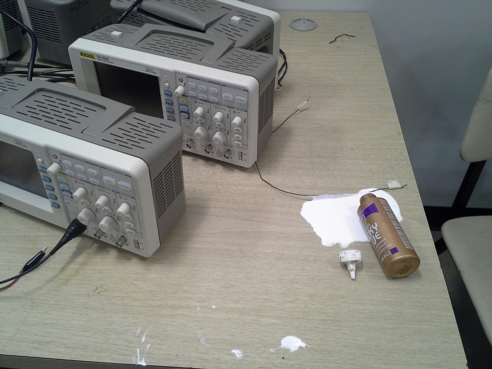

6.13. Day 11: Project 2 Definition (Oct 7)¶
Notes for 2015-10-05. See also the Fall 2015 Calendar.
6.13.1. Notes from Day 10¶
- Maker Faire participants: if you have not positively identified your project to Kelly Delaney, please do so immediately.
- Oct 23: IDeATe open house and President Suresh’s Global Advisory Council and Academic Leadership Council
- There are a regular series of fire extinguisher training sessions still ongoing: sign up at the CMU BioRAFT site. This site can also show you whether you were previously certified.
- I am pushing back and simplifying the project 2 proposal deadline to focus your attention on technical details and acknowledge the late posting of the prompt.
- Added new music sequencer exercise to introduce the idea of interpretation, C++ class structure, and simultaneous processes. See Unit 2 Exercises: Signals, Time, and Dynamics.
- Comments from report reviews.
- Process versus result documentation.
- Voltage dividers.
- Schematic capture.
- Event-loops.
- Grading
6.13.2. Agenda¶
- Administrative
- Purchase requests.
- Assignments
- Fri Oct 12: project 2 proposal. Keep the text minimal, I want your energy go toward thinking through the drawings and proof-of-concept statement. How much can you work out now before you start building? Could I construct your proof-of-concept from your drawing?
- Mon Oct 12: project 2 proof-of-concept.
- In-class
- Fourth round of research talks (45 minutes).
- Unit 2 Exercises
- Project 2 meetings